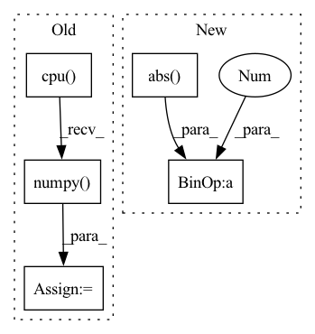

Pattern ID :28345

Before Change
dtype = mixture.dtype
mixture = mixture.detach().cpu().numpy()
estimated_amplitude = estimated_amplitude.detach().cpu().numpy()
mixture = mixture.transpose(2, 1, 0)
estimated_amplitude = estimated_amplitude.transpose(3, 2, 1, 0)
estimated_sources = norbert.wiener(estimated_amplitude, mixture, eps=eps)
estimated_sources = estimated_sources.transpose(3, 2, 1, 0)
estimated_sources = torch.from_numpy(estimated_sources).to(device, dtype)
return estimated_sources
After Change
ratio = estimated_sources_amplitude / estimated_sources_amplitude.sum(dim=0)
estimated_sources = ratio * mixture
norm = max(1, torch.abs(mixture).max() / 10)
mixture, estimated_sources = mixture / norm, estimated_sources / norm
estimated_sources = update_em(mixture, estimated_sources, iterations, eps=eps)
estimated_sources = norm * estimated_sources
In pattern: SUPERPATTERN
Frequency: 3
Non-data size: 5
Instances
Fragment ID: 83692029
Project Name: tky823/dnn-based_source_separation
Commit Name: d45a578a242ecb277ef7bdc5c9d6f75c4ad13521
Time: 2021-08-20
Author: 40362510+tky823@users.noreply.github.com
File Name: egs/musdb18/d3net/src/adhoc_driver.py
M Class Name: AnonimousClass
N Class Name: AnonimousClass
M Method Name: apply_multichannel_wiener_filter(5)
N Method Name: apply_multichannel_wiener_filter(4)
M Parent Class:
N Parent Class:
M File Name: egs/musdb18/d3net/src/adhoc_driver.py
N File Name: egs/musdb18/d3net/src/adhoc_driver.py
M Start Line: 398
M End Line: 414
N Start Line: 385
N End Line: 403
'>
Before Change
if stage != "train":
lens = lens * target_wavs.shape[1]
pesq_scores = multiprocess_evaluation(
predictions.cpu().numpy(),
target_wavs.cpu().numpy(),
lens.cpu().numpy(),
)
stats["pesq"] = pesq_scores
stats["stoi"] = -stoi_loss(predictions, target_wavs, lens)
if stage == "test":
After Change
enhance_path = os.path.join(
self.hparams.enhanced_folder, name
)
pred_wav = pred_wav / torch.max(torch.abs(pred_wav)) * 0.99
torchaudio.save(
enhance_path, pred_wav[: int(length)].cpu(), 16000
)
'>
Fragment ID: 83692031
Project Name: speechbrain/speechbrain
Commit Name: 12938c3385685062c6f084d917abef54fac489a3
Time: 2020-10-26
Author: weisberger2009@gmail.com
File Name: recipes/Voicebank/enhance/waveform_map/experiment.py
M Class Name: SEBrain
N Class Name: SEBrain
M Method Name: compute_objectives(4)
N Method Name: compute_objectives(4)
M Parent Class: sb.Brain
N Parent Class: sb.core.Brain
M File Name: recipes/Voicebank/enhance/waveform_map/experiment.py
N File Name: recipes/Voicebank/enhance/waveform_map/experiment.py
M Start Line: 70
M End Line: 95
N Start Line: 24
N End Line: 54
'>
Before Change
_, predicted = torch.max(outputs.data, 1)
for j in range(len(labels)):
cate_i = labels[j].cpu().numpy()
pre_i = predicted[j].cpu().numpy()
conf_mat[cate_i, pre_i] += 1.
if cate_i != pre_i:
path_error.append((cate_i, pre_i, path_imgs[j])) // 记录错误样本的信息
After Change
loss = loss_f(outputs.cpu(), labels.cpu())
loss_list.append(loss.item())
loss_mean = np.mean(loss_list)
acc_batch_list.append((1 - np.abs(outputs.cpu().detach().numpy() - labels.cpu().detach().numpy())))
ocean_acc = np.concatenate(acc_batch_list, axis=0).mean(axis=0)
acc_avg = ocean_acc.mean()
'>
Fragment ID: 83692021
Project Name: liaorongfan/deeppersonality
Commit Name: 565a883600a2f9be36416c98383ef54294da8ab1
Time: 2021-05-23
Author: 15670381505@163.com
File Name: dpcv/engine/portrait_model_trainer.py
M Class Name: ModelTrainer
N Class Name: ModelTrainer
M Method Name: valid(4)
N Method Name: valid(4)
M Parent Class: object
N Parent Class: object
M File Name: dpcv/engine/portrait_model_trainer.py
N File Name: dpcv/engine/portrait_model_trainer.py
M Start Line: 60
M End Line: 87
N Start Line: 54
N End Line: 71